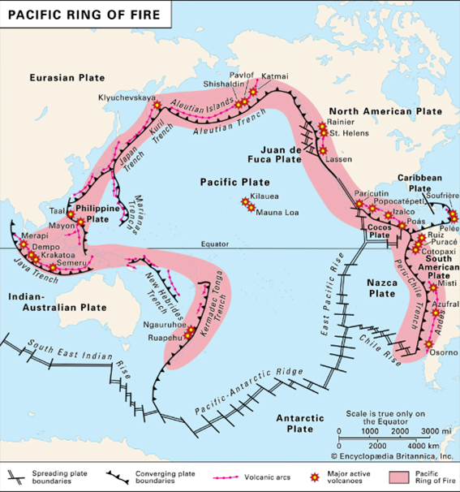
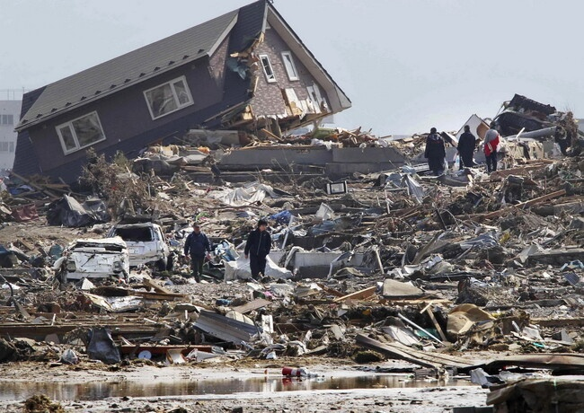
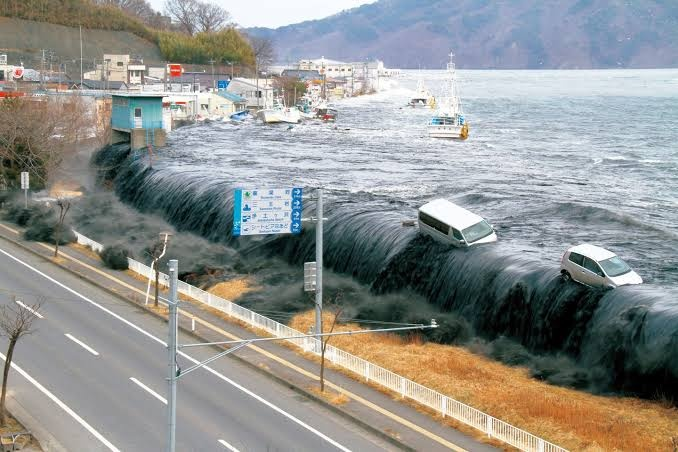
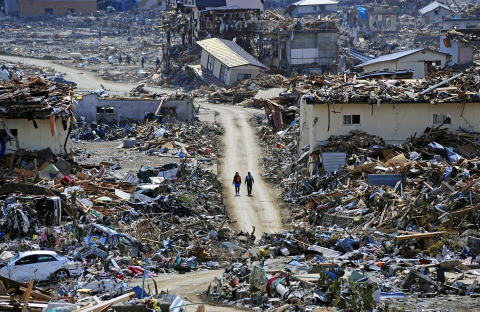
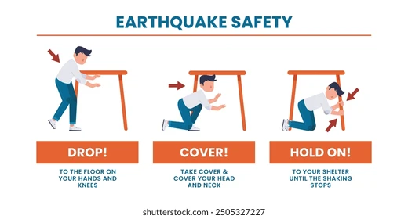

Natural disasters — Part 1
An earthquake is the sudden release of energy in the Earth's crust, caused by shifting tectonic plates. That release sends out seismic waves that shake the ground above.

Off the Pacific coast of Tōhoku, Japan — March 11, 2011



Offshore, the Pacific Plate slowly dives beneath the Okhotsk Plate. When the plates lock instead of sliding, stress accumulates for decades — until it releases all at once.
In 2011, a 500-km stretch of fault slipped up to 50 meters in minutes, thrusting the seafloor upward and displacing a massive volume of water. That displacement created the tsunami.
Natural disasters — Part 3
Most earthquake injuries come from falling objects, not collapsing buildings. Three simple steps, and one packed bag, greatly reduce the risk.
